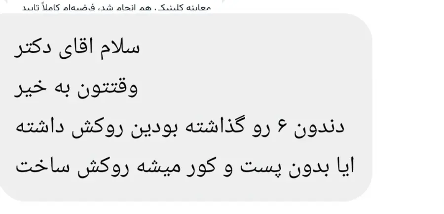

نسخه استخراجشده؛ ترجمه یا تأیید علمی انجام نشده است. وضعیت: captured
دندان ۶ اندوشدهی بیمار برای روکش برنامهریزی شده است و او میپرسد: «آیا بدون پست و کور میشود روکش ساخت؟»

برای جواب باید نقش پست را دقیق بشناسی.
پرسش درست این نیست که «پست لازم است یا نه»، بلکه این است که «کور بدون پست، گیر کافی دارد یا نه». پست یک عنصر گیر است، نه یک عنصر تقویتکننده.
کور باید جایی برای گرفتن داشته باشد: یا دیوارههای باقیماندهی تاج، یا کانال ریشه. اگر ساختار باقیماندهی تاج کافی باشد، کور روی همان ساختار ساخته میشود، روکش روی کور تراش داده و سمان میشود، و نیازی به پست نیست.
جمعبندی: اگر دیوارههای کافی از تاج باقی مانده و فرول مناسب وجود دارد، ساخت روکش بدون پست کاملاً قابل انجام است و از نظر حفظ ساختار دندان انتخاب بهتری هم هست. پست تنها زمانی اندیکاسیون دارد که ساختار کرونالی برای تأمین گیر کور کافی نباشد.
نوع سؤال: ساخت کلمه · 3 خانه
حروف منبع: ر · ی · گ